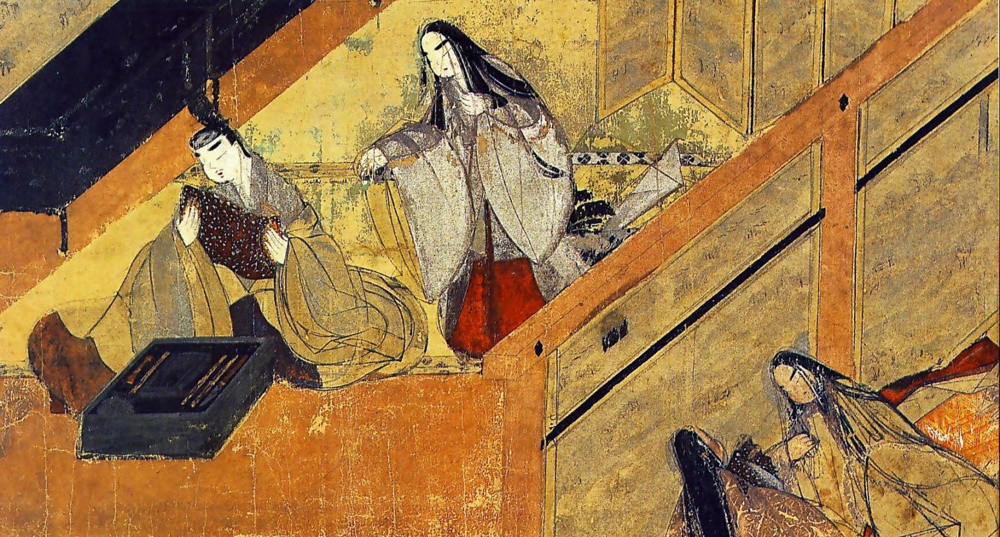
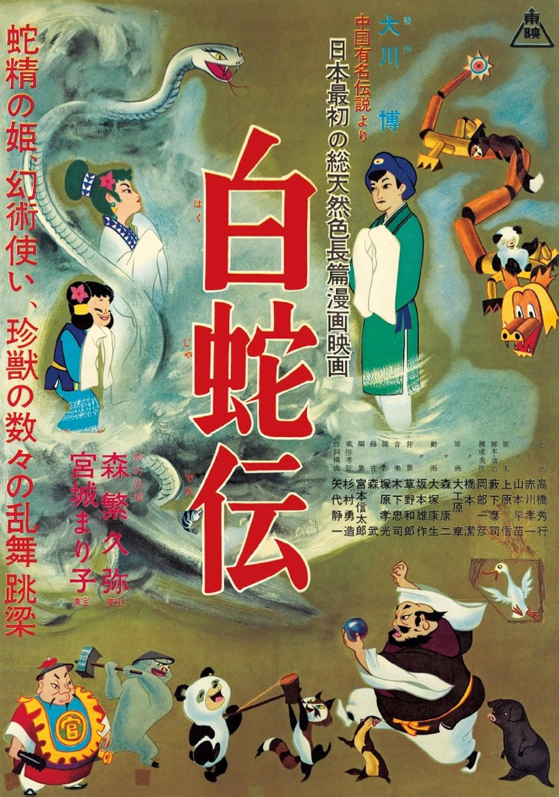
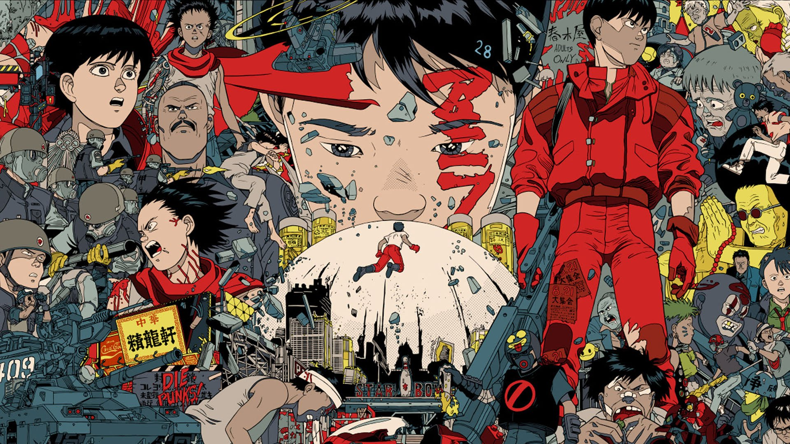

Las raíces: del emakimono al fotograma
Arte narrativo japonés y primeras animaciones occidentales
Para entender el anime es necesario remontarse mucho más atrás de lo que la mayoría imagina. La tradición narrativa japonesa tiene una historia visual milenaria: desde el siglo XII, los emakimono —rollos ilustrados desplegados de derecha a izquierda— narraban leyendas y batallas como si fueran panoramas en movimiento. Los títeres del teatro bunraku, el arte de sombras kagee y las estampas ukiyo-e del período Edo (1603–1868) se consideran ancestros visuales de los personajes de anime.[1]
En el plano occidental, la primera película de animación documentada fue Humorous Phases of Funny Faces (1906), del productor estadounidense James Stuart Blackton. En 1908, el dibujante francés Émile Cohl produjo Fantasmagorie. Estas obras llegaron a las salas japonesas hacia 1910 y entre 1914 y 1917 se exhibieron unas 93 películas de animación extranjeras en Japón, siendo las estadounidenses las de mayor popularidad.[2] Su impacto fue inmediato: los productores nipones comenzaron a plantearse crear animación propia.
También existe una obra anterior de autoría desconocida: Katsudō Shashin (活動写真), un fragmento de apenas 3–4 segundos descubierto en Kioto en 2005 y datado entre 1907 y 1911. Aunque el periódico Asahi Shimbun advierte que llamarla "animación" en el sentido contemporáneo puede ser controvertido, es la manifestación más antigua de imágenes en movimiento producidas en Japón que se conoce.[3]

Los tres pioneros y la era oscura
Nacimiento del medio, el Gran Terremoto y la propaganda bélica
El año 1917 marca el inicio formal de la animación japonesa con la coincidencia de tres creadores que trabajaban de forma independiente y sin comunicación entre sí. Ninguno disponía de documentación sobre técnicas de animación, por lo que cada uno experimentó por su cuenta, a base de prueba y error.[2]
Ōten Shimokawa
Creó Imokawa Mukuzō Genkanban no Maki, considerado el primer cortometraje de animación japonesa estrenado públicamente. Trazaba figuras sobre pizarra con tiza. Realizó cinco cortos, pero el esfuerzo visual dañó su vista y regresó al manga.
Seitarō Kitayama
Produjo Saru Kani Gassen (La batalla del mono y el cangrejo), basada en un cuento popular japonés. Llegó a realizar hasta diez películas ese año y exportó una adaptación de Momotarō a Francia, siendo el primer anime llegado a Occidente.
Jun'ichi Kōuchi
Estrenó Namakura Gatana (La espada desafilada), un corto de 4 minutos sobre un samurái que compra una katana sin filo. Es la obra más antigua conservada; fue redescubierta en 2008 en una tienda de antigüedades de Osaka.

El Gran Terremoto de Kantō (1923)
El desarrollo temprano del anime sufrió un golpe devastador cuando el Gran Terremoto de Kantō destruyó los estudios y almacenes en Tokio. Incontables obras pioneras se perdieron para siempre en los incendios, dejando un vacío histórico que los investigadores del cine aún intentan llenar.[1] Kitayama, cuyo estudio quedó destruido, se trasladó a Osaka y abandonó la animación para dedicarse a documentales.
El anime al servicio de la guerra (1930–1945)
A medida que Japón entraba en su período militarista, el gobierno imperial reconoció el poder de la animación como herramienta de propaganda. La obra más significativa de este período fue Momotarō: Umi no Shinpei (Momotarō, Marinero Sagrado, 1945), el primer largometraje de animación japonesa, financiado por la Marina Imperial. Ironicamente, muchos de los animadores que trabajaron en estas producciones bélicas serían quienes después construirían la industria creativa del anime de posguerra.[4]
El sueño de ser el Disney de Oriente
Toei Animation y los primeros largometrajes de calidad
Con Japón reconstruyéndose tras la guerra, la industria cultural cobró un papel vital. En 1948 se fundó Nihon Dōga Eigasha, que en 1956 se convertiría en Toei Dōga (hoy Toei Animation) con una ambición declarada: convertirse en el "Disney de Oriente". A diferencia del modelo televisivo que vendría después, Toei apostó por el largometraje de alto presupuesto con animación fluida y detallada.[4]
En 1958 estrenaron Hakujaden (The Tale of the White Serpent), el primer largometraje de animación japonés en color, basado en una leyenda china. La película demostró que Japón podía producir animación de estándar mundial y tuvo una consecuencia inesperada: un joven llamado Hayao Miyazaki la vio en el cine y quedó tan impactado que decidió dedicar su vida a la animación.
En los pasillos de Toei también se formó Isao Takahata. Estos dos nombres, que décadas más tarde fundarían Studio Ghibli, aprendieron en Toei la filosofía de "calidad sobre cantidad" que marcaría toda su carrera.

Hakujaden (1958) — Primer largometraje animado en color de Toei.

Estudios Toei Animation — Tokio, Japón.
Osamu Tezuka y el nacimiento del anime televisivo
Astro Boy, la animación limitada y el surgimiento del Mecha
Osamu Tezuka (1928–1989), conocido en Japón como el "Dios del Manga" (漫画の神様), fue el artista que transformó el anime de un entretenimiento cinematográfico de nicho en una industria televisiva de alcance masivo. Su influencia fue tan profunda que resulta imposible imaginar el anime moderno sin él.[5]
"El 1 de enero de 1963 fue la transmisión inaugural de Astro Boy. Fue el primer programa animado de TV japonesa producido como serie. Las series animadas para TV con episodios de 30 minutos emitidos semanalmente son moneda corriente hoy, y Astro Boy fue la primera de este estilo en el mundo."
— Osamu Tezuka, citado en Google Arts & Culture / Tezuka ProductionsLa animación limitada: la necesidad como virtud
Para producir 30 minutos de animación por semana —algo inaudito en la época—, Tezuka y su equipo de Mushi Production desarrollaron la animación limitada: una técnica que reducía el número de fotogramas por segundo y reutilizaba fondos y secuencias. En lugar de movimientos fluidos, apostaron por expresiones faciales exageradas, movimientos de cámara dinámicos y planos estáticos prolongados que transmitían emoción sin necesidad de redibujar.[6]
Lo que nació de la limitación presupuestaria se convirtió en uno de los rasgos más reconocibles del anime. El primer episodio alcanzó un 27,4% de audiencia; el pico histórico fue del 40,7%, registrado el 29 de agosto de 1964.[7]

Obras clave del período (1963–1979)
Astro Boy (Tetsuwan Atomu)
Primera serie semanal de anime de 30 minutos. Combinaba ciencia ficción con dilemas morales sobre la convivencia entre humanos y robots. Fue exportada a EE.UU., China y países europeos.[7]
Kimba, el León Blanco (Jungle Taitei)
Segunda gran serie de Tezuka. Fue la primera serie de anime televisivo emitida en color en Japón y abrió el camino para la exportación sistemática a Occidente.
Mazinger Z
Creado por Go Nagai, popularizó el género mecha (robots gigantes pilotados por humanos), uno de los pilares del anime que definiría décadas de producción.
Mobile Suit Gundam
Introdujo un enfoque más realista y político en el género mecha, con guerras interespaciales moralmente complejas. Generó un universo expandido que sigue activo hasta hoy.
La Edad de Oro: Akira, Ghibli y la conquista global
OVAs, cyberpunk, Dragon Ball y la legitimación como arte
Japón vivía en los años 80 una burbuja económica sin precedentes. El excedente de capital se derramó sobre la industria cultural y permitió una libertad creativa que no había existido antes. Nació el formato OVA (Original Video Animation): lanzamientos directos a VHS que eludían la censura televisiva y la presión por el éxito masivo en cines. Las OVAs posibilitaron el anime adulto, experimental, violento y erótico que definiría una generación de culto.[4]
Akira (1988): la carta de presentación ante el mundo
La culminación técnica de esta era fue Akira (1988), de Katsuhiro Otomo, una película de ciencia ficción distópica ambientada en Neo-Tokio. Con un presupuesto extraordinario para la época, utilizó 327 colores diferentes —50 creados específicamente para la película— y abandonó la animación limitada de Tezuka para regresar a una fluidez total. Aplicó además la técnica de pre-scoring: los actores grababan sus voces antes de la animación y los personajes sincronizaban sus labios con el audio, algo inaudito en Japón hasta ese momento.[4]

Studio Ghibli: el anime como cine de arte
En 1985, Hayao Miyazaki e Isao Takahata fundaron Studio Ghibli, llevando la filosofía de calidad que ambos habían aprendido en Toei a su máxima expresión. Sus películas combinaban una animación exquisita con narrativas maduras sobre la naturaleza, la guerra, la infancia y la identidad. Mi Vecino Totoro (1988) y La Tumba de las Luciérnagas (1988) —estrenadas el mismo año— demostraron que el anime podía ser devastadoramente bello y emocionalmente devastador a la vez.[8]
El hito definitivo de legitimación internacional llegó en 2003, cuando El Viaje de Chihiro (Sen to Chihiro no Kamikakushi, 2001) ganó el Óscar a la mejor película de animación, convirtiéndose en la primera película no hablada en inglés en ganar ese galardón en esa categoría.

La expansión global (1986–1999)
Mientras el cine de autor elevaba el anime, la televisión lo masificaba a escala mundial. En 1986 se estrenó Dragon Ball, adaptando el manga de Akira Toriyama. Las aventuras de Goku se convirtieron en la exportación cultural más importante de Japón. Sailor Moon (1992) hizo lo propio con el género mahō shōjo, llevando la magia y la amistad a audiencias de todo el mundo, especialmente femeninas.[8]
En 1995, Ghost in the Shell (Mamoru Oshii) encabezó la lista de ventas semanales de videos de Billboard en Estados Unidos, convirtiéndose en símbolo del anime "tomado en serio" por Occidente.[9] Ese mismo año, Neon Genesis Evangelion (Hideaki Anno) deconstruyó el género mecha y se convirtió en un estudio de trauma psicológico que sigue siendo analizado académicamente tres décadas después.

Dragon Ball (1986) — Adaptación del manga de Akira Toriyama.

Neon Genesis Evangelion (1995) — Hideaki Anno deconstruye el género mecha.
La era digital y el dominio del streaming
CGI, fenómeno global y los $25 mil millones de una industria
La transición al siglo XXI trajo consigo el fin del celuloide físico. El software de animación digital reemplazó los acetatos pintados a mano, reduciendo costos y acelerando la producción. El CGI comenzó a integrarse gradualmente, al principio con torpeza y luego con resultados cada vez más refinados. Los estudios conservaron la estética del anime tradicional mientras adoptaban herramientas modernas.
La llegada de plataformas de streaming como Crunchyroll (fundada en 2006), y posteriormente Netflix y Amazon Prime Video, eliminó las barreras geográficas y los retrasos de distribución. El modelo de simulcast —emisión simultánea con la transmisión original japonesa— permitió por primera vez que los fans de todo el mundo vieran los nuevos episodios pocas horas después de su estreno.[8]
Títulos que redefinieron la industria
Fullmetal Alchemist / Brotherhood
Combinó acción, filosofía y crítica al totalitarismo. Brotherhood (2009) se convirtió en la serie mejor valorada por la comunidad global de anime durante años.
Attack on Titan (Shingeki no Kyojin)
Demostró que el anime de adultos podía ser un fenómeno viral global. Rompió récords de audiencia y generó debates culturales en más de 190 países.
Demon Slayer (Kimetsu no Yaiba)
La película Mugen Train (2020) se convirtió en la película más taquillera de la historia de Japón, superando incluso a El Viaje de Chihiro.
My Hero Academia (Boku no Hero Academia)
Rejuveneció el género shōnen de superhéroes y se convirtió en uno de los animes más visto en plataformas de streaming de América Latina.
Anime Expo o Comiket — Fandom global
Imagen sugerida: fotografía de una convención de anime internacional (Anime Expo, Comiket, etc.) mostrando la comunidad global — licencia Creative Commons preferida
El anime hoy: cifras de una industria global
Según datos de 2023, la industria del anime mueve más de $25 mil millones de dólares anuales a nivel global, incluyendo licencias, merchandising, streaming y eventos en vivo. Es el tercer tipo de contenido más visto en plataformas de streaming a nivel mundial, con fandoms activos en más de 190 países. Japón produce actualmente más de 200 series de anime por año, con más de 700 estudios de animación registrados.[8]
💡 ¿Sabías que…?
- Namakura Gatana (1917), el cortometraje más antiguo conservado del anime, fue redescubierto en 2008 en una tienda de antigüedades de Osaka.
- Akira (1988) usó 327 colores diferentes, de los cuales 50 fueron creados específicamente para la película.
- Tezuka fue invitado en 1965 por Stanley Kubrick para ser director artístico de 2001: Odisea del Espacio, pero rechazó la oferta.
- El Viaje de Chihiro (2001) fue la primera película no hablada en inglés en ganar el Óscar a mejor película de animación.